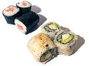
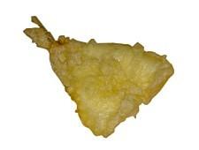
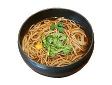
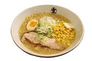
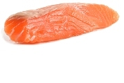
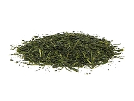

Japanese cuisine is based on combining the staple food, which is steamed white rice or gohan, with one or more okazu, "main" or "side" dishes. This may be accompanied by a clear or miso soup and tsukemono (pickles).
Here are some types of Japanese food or drink you might recognize: Sushi, Tempora, Soba, Ramen, Sashimi, Takoyaki, Tea
Nigiri
Norimaki
Ebi(shrimp)
Sakana(fish)
Tsukimi Soba
Kake Soba
Shoyu
Miso
Maguro(tuna)
Sake(salmon)

Matcha(powdered green tea)
Ryokucha(green tea)